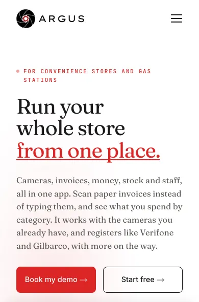
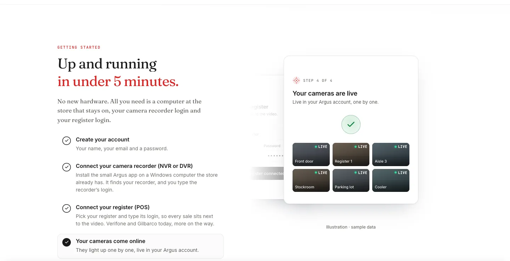
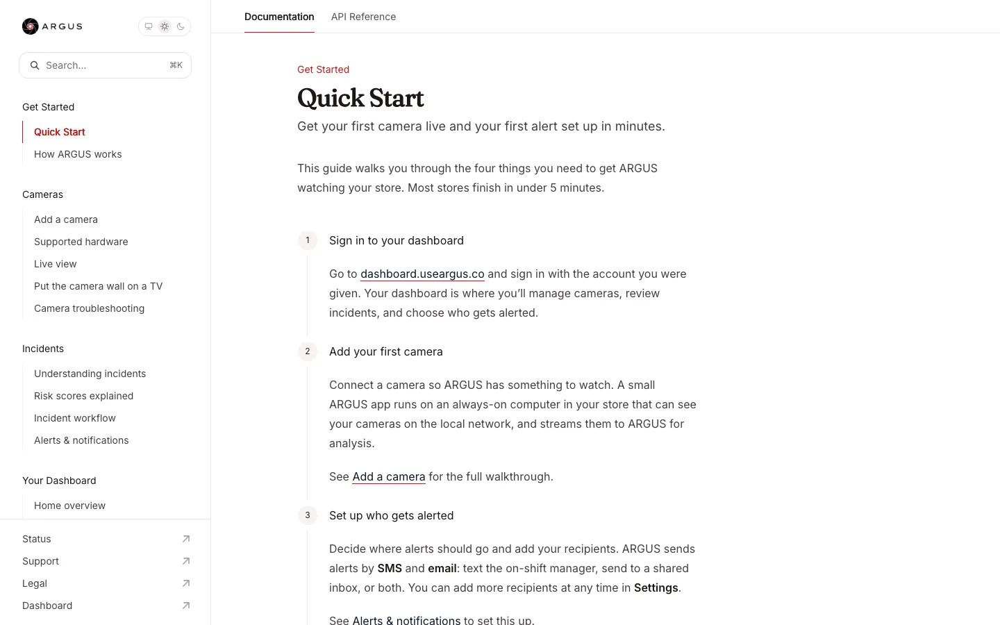

Argus sub-projectEnded 2026
useargus.co
The Argus marketing site, its docs and its status page.
- useargus.co
- docs.useargus.co
- status
- Private repo

A store owner has about a minute.
The people we sold to run busy stores. They will not read a long page about computer vision. In that minute the site has to say what Argus does, show that it is easy to start and show that it works with the cameras and register they already have.
Say it in plain words, then prove it.
The headline is the whole pitch: run your whole store from one place. Under it sit the three things an owner worries about. It is free for 60 days with no card needed. Setup takes under 5 minutes. And nothing new goes on the wall.
The rest of the page backs those up. A four-step setup, the registers it works with (Verifone and Gilbarco, with more on the way), the camera and recorder brands, a demo of the dashboard, and a section of numbers that no single tool can give you, such as the share of what left the store that was actually paid for.
Cookies are handled openly: a banner offers reject non-essential next to accept.
How it is built
The site is Next.js. I built the first version in March 2026, with GSAP for its animation, then rebuilt it into the current one. Clerk provides sign-in for the Log in button.
The docs at docs.useargus.co came from a documentation template and cover getting started, cameras, incidents and the dashboard, with search and a light and dark switch. The status page shows the website, dashboard and docs with 90 days of history.
I ran the site day to day.

Screens from the live sites

Setup in four steps, with sample data. 
The numbers section. The 96.4% reading is labeled a sample. 
docs.useargus.co, the Quick Start page. 
status.useargus.co.


What I owned
- Built the first site in March 2026, then the current one.
- Ran it day to day. Most of the human-written commits are mine.
- Set up the docs site at docs.useargus.co from a template.
What I learned
On a sales page, the number you can show beats the adjective. Wherever a figure was a sample, the site said so on the page.
Plain words and a short list of proof beat clever motion for a busy store owner.